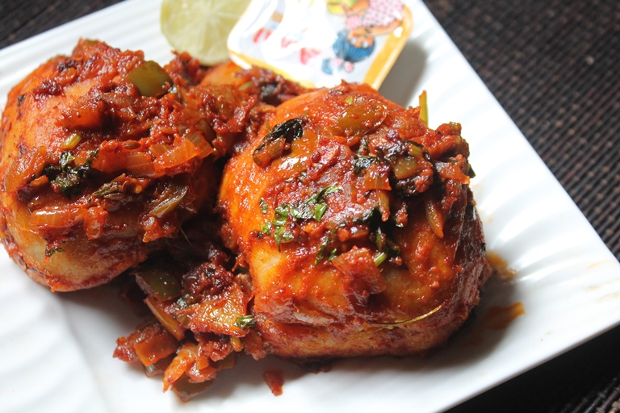

Masala Pav

Description
Masala Pav is one recipe which i wanted to try for a long time.
It is a simple recipe but taste really delicious and buttery.
This is one of my favourite dish and i make it quite often too.
Ingredients
- Pav Buns
- Capsicum
- Kashmiri Chilli Powder
- Tomatoes
Steps
- Heat oil in a pan, add cumin and let it sizzle.
- Add in onions and fry till golden.
- Add in ginger garlic paste and mix well.
- Now add in capsicum and tomatoes and cook for 6 to 7 mins.
- Add in pav bhaji masala and chilli powder, salt and mix well. Cook for few mins.
- Add in water and bring it to a boil. Simmer for 5 mins or so.
- Now add in lemon juice and coriander leaves and mix well. Remove this to a bowl.
- Now in the same pan, melt some butter, spoon some bhaji in and set aside in the pan, in other side place slit pav buns and toast them.
Now spoon some masala inside the buns and top of it.
- Remove it on a plate and sprinkle onions, coriander leaves.
Serve with extra butter and lemon wedges.
Return to Main Page